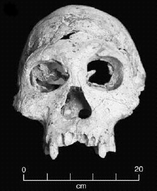
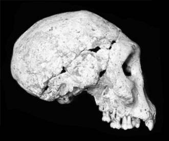

Skull D2700


D2700, Homo georgicus
Discovered in 2001 at Dmanisi in Georgia (in the ex-USSR). Estimated age is 1.8 million years. D2700 consisted of a mostly complete skull in exceptionally good condition, including a lower jaw (D2735) found about a meter away and thought to belong to the same individual (Vekua et al. 2002, Balter and Gibbons 2002). At around 600 cc, this is the smallest and most primitive hominid skull ever discovered outside of Africa (or, at least, was until recently. Homo floresiensis is smaller)Two other skulls had earlier been found at the same site in 1999. D2280 was an almost complete braincase with a brainsize of 780 cc. D2282 was a cranium which included many of the facial and upper jaw bones, with a brain size of about 650 cc. A lower jaw, D211, had also been discovered in 1991, and another lower jaw, D2600, in 2000. (Gabunia et al. 2000, Balter and Gibbons 2000)
{kind=link}
{kind=link}
Although the brain size of D2282 (650 cc) was smaller than any H. erectus fossil then known, and close to the average H. habilis brain size, Gabunia et al. (2000) pointed out the many similarities of D2280 and D2282 to H. erectus fossils such as WT 15000 and ER 3733:
Despite their relatively small cranial capacities, both Dmanisi fossils differ from H. rudolfensis and H. habilis and display a number of essential similarities with the crania of H. erectus sensu lato and particularly with its early African forms, attributed by some to H. ergaster. (Gabunia et al. 2000)Their final conclusion was that D2280 and D2282 were both Homo ergaster or something very similar:
We thus assign the Dmanisi hominids to Homo ex gr. ergaster (Gabunia et al. 2000).
At 600 cc, the new discovery D2700 is even smaller than D2282, and appears slightly more primitive. Vekua et al. (2002) list many characteristics in which it resembles H. ergaster (or erectus), and also a number in which it resembles the H. habilis skull ER 1813, and conclude
The Dmanisi hominids are among the most primitive individuals so far attributed to H. erectus or to any species that is indisputably Homo, and it can be argued that this population is closely related to Homo habilis (sensu stricto) as known from Olduvai Gorge in Tanzania, Koobi Fora in northern Kenya, and possibly Hadar in Ethiopia.
The minor differences between the three Dmanisi skulls were not considered great enough to justify placing them in different species:
In overall shape, D2700 is similar to D2280 and D2282, and D2735 resembles D211. Despite certain differences among these Dmanisi individuals, we do not see sufficient grounds for assigning them to more than one hominid taxon. We view the new specimen as a member of the same population as the other fossils, and we here assign the new skull provisionally to Homo erectus (=ergaster). (Vekua et al. 2002)In a later paper, all these specimens were assigned to the new species Homo georgicus, using the fossil D2600 as a type specimen. (Gabunia et al. 2002) The same paper also estimated the height of H. georgicus from a foot bone at about 1.5 m (4'11").
April 2005: A newly published paper gives details of a fourth skull (D3444, 625 cc) and jawbone (D3900) belonging to the same individual discovered at Dmanisi. This skull is unusual in that it had lost all but one tooth, and most of them had been missing for a number of years. This suggests that the individual might have required considerable support from his companions to survive. (Lordkipanidze et al. 2005; April 2005 National Geographic)
Postcranial bones
In 2007, the discovery of many postcranial (below the skull) bones was announced (Lordkipanidze et al 2007, Gibbons 2007, Lieberman 2007). The bones included a right femur, tibia and kneecap (the most complete known lower limb of early Homo); an ankle bone, part of a shoulder blade, three collar bones, three upper arm bones, five vertebrae, and a few other small bones. Some of these bones were associated with some of the previously discovered skulls. Study of the leg bones shows that the Dmanisi hominids walked bipedally and upright, though there are some minor differences from modern humans.The length and morphology of the hindlimb is essentially modern, and the presence of an adducted hallux and plantar arch indicate that the salient aspects of performance in the leg and foot, such as biomechanical efficiency during long-range walking and energy storage/return during running, were equivalent to modern humans. However, plesiomorphic features such as a more medial orientation of the foot, absence of humeral torsion, small body size and low encephalization quotient suggest that the Dmanisi hominins are postcranially largely comparable to earliest Homo (cf. H. habilis). Hence, the first hominin species currently known from outside Africa did not possess the full suite of derived locomotor traits apparent in African H. erectus and later hominins. (Lordkipanidze et al. 2007)The upper body bones are not as complete, but some features of the shoulder blades and collar bones suggested to Lordkipanidze et al that the Dmanisi hominids might possibly have been more australopith-like than human-like in the upper limbs.
The implications for evolution
It has always been thought that the first hominid to leave Africa was Homo erectus (or ergaster), and that this had happened after erectus had attained the modern body shape and full adaptation to bipedality shown in the Turkana Boy fossil.The discovery of the Dmanisi skulls, particularly D2700, raises the possibility, suggested by Vekua and his colleagues, that the Dmanisi hominids might have evolved from habilis-like ancestors that had already left Africa. That in turn would cause re-evaluation of theories about why hominids first left Africa.
The implications for creationism
How will creationists interpret this fossil? Despite its erectus-like features, if D2700 had been found in isolation creationists would almost certainly call it non-human, given its small brain size and its similarities to H. habilis. The problem with this is that D2700 is a member of a population, and the largest skull in that group would almost certainly be classified as human by most creationists.Because of the obvious humanness of the Turkana Boy fossil, and the fact that H. erectus brain sizes overlap the extreme lower range of modern human brain sizes, creationists have nowadays almost entirely abandoned the old line (popularized by Duane Gish) that Peking Man and Java Man are apes, and now generally claim that Homo erectus fossils are a variant form of modern humans (ignoring the inconvenient fact that there are many obvious differences between Homo erectus and Homo sapiens).
Most creationists now place the line between human and ape fossils between Homo erectus (human) and H. habilis (ape), with some disagreement about which side of the line the habiline fossil ER 1470 should fall.
Now, however, in the Dmanisi fossils, we have a group of three closely related skulls which, in both brain size and physical characteristics, nicely straddle that line and resemble the fossils on either side of it.
The largest, D2280, resembles but is a bit smaller (780 cc) than Homo erectus fossils such as the Turkana Boy and ER 3733. The next largest, D2282, is very similar to it but considerably smaller (650 cc), below the previously smallest known erectus (750 cc), and in the middle of the H. habilis range. The last Dmanisi skull, D2700, is even smaller (600 cc) and also more primitive, containing a mixture of erectus and habilis traits.
In short, it's hard to imagine a more convincing series of transitional fossils.
Only one thing can be predicted for certain about the creationist response: whatever D2700 is, they'll say, it sure as heck ain't a transitional form!
The first creationist (non-)response
The first creationist response to the Dmanisi fossils was made in the Institute for Creation Research's radio show on November 23, 2002.ICR's 'experts' start off by recounting the stories of Piltdown Man, Nebraska Man, Orce Man, and a particularly obscure fossil discovered in Java in 1926 which was briefly claimed by its finder to be another Pithecanthropus (Java Man), but was quickly shown to be from the knee of an elephant. This is all rather pathetic: none of these have the slightest relevance to the currently accepted evidence for human evolution. In fact, apart from Piltdown Man, none of them ever had any relevance: they were all quickly and correctly identified as non-hominid.
Having set the scene with these irrelevancies, ICR gets around to discussing the Dmanisi fossils:
Narrator: It has been substantiated that fraud has been committed in the past. However, most scientists have good intentions, even if they are based on evolutionary assumptions. But do these kinds of misunderstandings still happen? Dave Phillipps looks at a skull fossil found very recently in Dmanisi, Georgia, in the former Soviet Union.Phillipps: A most recent example of that would be some material that was found in the Republic of Georgia [...] where they recently found a fragmentary skullcap, skull remains, and other fragmentary limb bones.
Following a brief description of the fossils by Marvin Lubenow, ICR's narrator states that
These fossil finds seem to contradict accepted evolutionary theory. What causes some scientists to hold on so tightly to them as proof of evolution?The Dmanisi fossils do not contradict evolutionary theory. What they contradict - or, more accurately, modify - is some current thinking about human evolution. That's not surprising: with their mixture of erectus (or ergaster) and habilis traits, the Dmanisi fossils aren't quite like anything that has ever been discovered before. Their anatomy comes as no great shock, however; fossils like them would have to have existed if erectus evolved from habilis.
No-one, though, would have expected to find such fossils outside Africa. Because they are more primitive than any other hominid fossils previously found outside Africa, the Dmanisi fossils can hardly help but cause a reevaluation of current scenarios about human evolution and migration. This is not struggling to maintain belief in evolution in spite of the evidence, as ICR would have it, but adapting to new evidence which is an essential part of good science.
Not only are these fossils entirely consistent with evolutionary theory, their transitional nature makes them strong evidence for human evolution, and a major problem for creationists, not the other way around.
After all of that, with their innuendo about "fraud" and "misunderstandings", it's noteworthy that ICR never got around to telling their listeners exactly what they consider the Dmanisi fossils to be. This would seem to indicate that the ICR recognizes that these fossils are going to be extremely difficult to pigeonhole as "ape" or "human", and therefore dodged the issue by refusing to try and identify them.
The funniest line in the interview probably comes from Thomas Kendall, who claims that
You have to realise these paleoanthropologists, if they're not making finds, they don't get research grants, they don't get their name in the paper, they don't get to publish.This will certainly come as a big surprise to paleoanthropologists, most of whom have probably never found a hominid bone in their lives. Kendall's statement is, to put it politely, nonsense.
Creationist Casey Luskin of the Discovery Institute has responded to the discovery of the postcranial bones with an article at www.evolutionnews.org, in which he suggests that the Dmanisi skeletons possibly belonged to apes. I have responded to this in a Panda's Thumb article, Dmanisi fossils - more transitional than ever. Answers in Genesis has also written about the skeletal bones, claiming that the Dmanisi hominids were humans. I have responded in another Panda's Thumb article, Dmanisi and Answers in Genesis.
References
Balter M. and Gibbons A. (2002): Were 'Little People' the first to venture out of Africa? Science, 297:26-7.
Balter M. and Gibbons A. (2000): A glimpse of humans first journey out of Africa. Science, 288:948-50.
Gabunia L., de Lumley M.-A., Vekua A., Lordkipanidze D., and de Lumley H. (2002): Découvert d'un nouvel hominidé à Dmanissi (Transcaucasie, Georgie). C.R.Palevol 1, 2002:243-53.
Gabunia L., Vekua A., Swisher C.C., III, Ferring R., Justus A., Nioradze M. et al. (2000): Earliest Pleistocene hominid cranial remains from Dmanisi, Republic of Georgia: taxonomy, geological setting, and age. Science, 288:1019-25.
Gibbons, A. (2007): A new body of evidence fleshes out Homo erectus. Science, 317:1664. (commentary on Dmanisi postcranial fossils)
Lieberman D.E. (2007): Homing in on early Homo. Nature, 449:291-292. (commentary on Dmanisi postcranial fossils)
Lordkipanidze D., Vekua A., Ferring R., Rightmire G.P., Agusti J., Kiladze G. et al. (2005): The earliest toothless hominin skull. Nature, 434:717-8.
Lordkipanidze, D., Jashashvili, T., Vekua, A., Ponce de Leon, M. S., Zollikofer, C. P., Rightmire, G. P. et al. (2007): Postcranial evidence from early Homo from Dmanisi, Georgia. Nature, 449:305-310.
Vekua A., Lordkipanidze D., Rightmire G.P., Agusti J., Ferring R., Maisuradze G. et al. (2002): A new skull of early Homo from Dmanisi, Georgia. Science, 297:85-9.
Links
Preview of the August 2002 National Geographic cover storySkull fossil challenges out-of-Africa theory, by John Roach (National Geographic)
First humans 'small brained', by Helen Briggs (BBC)
Ancient skull challenges human origins, by Marsha Walton (CNN)
First humans to leave Africa weren't necessarily a brainy bunch, by Kate Wong (Scientific American)
Stranger in a New Land, by Kate Wong (Scientific American, Nov 2003)
Out of Africa migration may be a no-brainer, by Jeff Hecht (New Scientist)
Georgian skull's link to our past , by Robert Parsons (BBC)
Doubting Dmanisi, by Pat Shipman (American Scientist, Nov 2000)
Odd Fossil Skeletons Show Both Apelike and Human Traits, National Geographic News, Sep 2007
This page is part of the Fossil Hominids FAQ at the talk.origins Archive.
Home Page |
Species |
Fossils |
Creationism |
Reading |
References
Illustrations |
What's New |
Feedback |
Search |
Links |
Fiction
http://www.talkorigins.org/faqs/homs/d2700.html, 13/01/2009
Copyright © Jim Foley
|| Email me